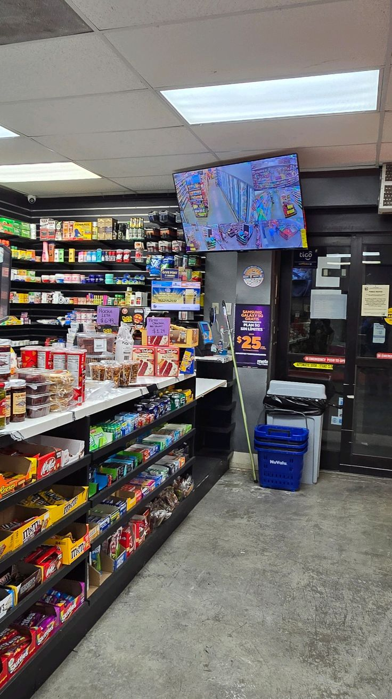
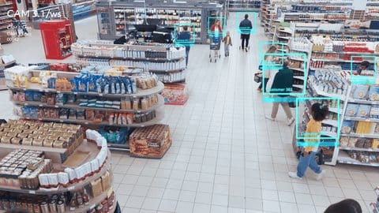
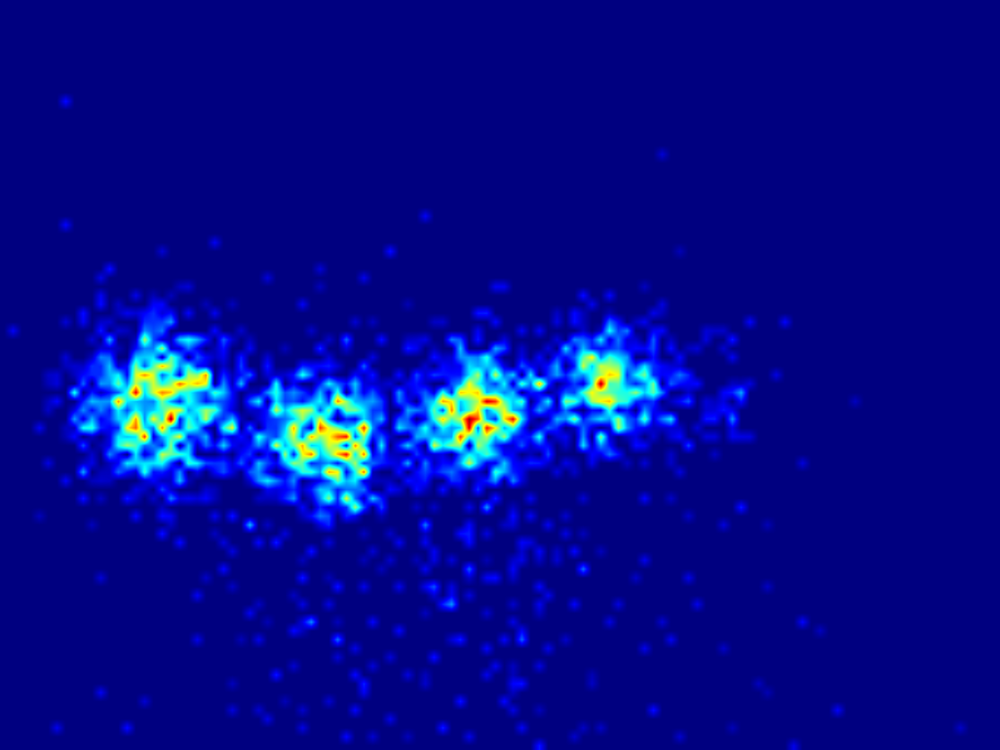
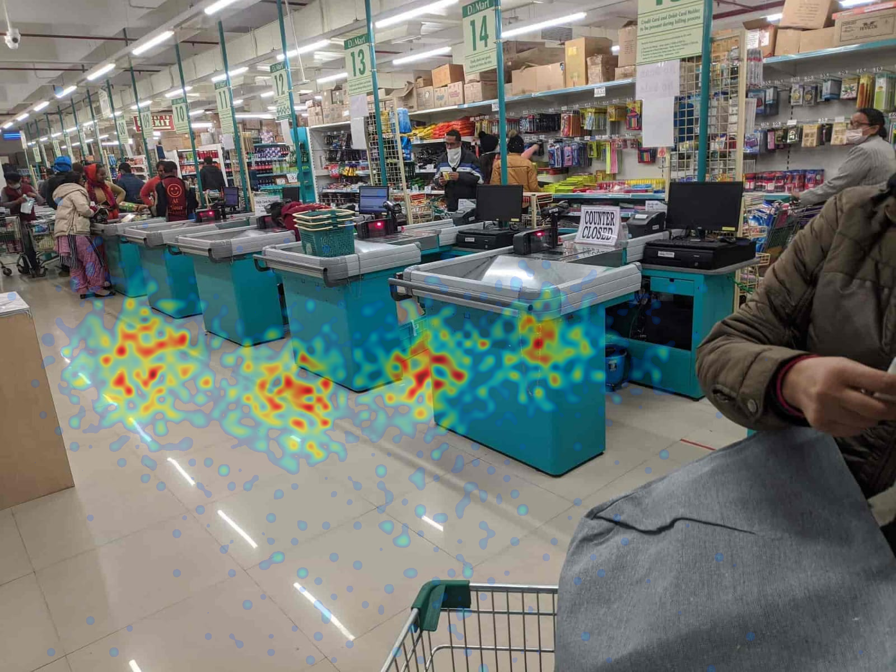
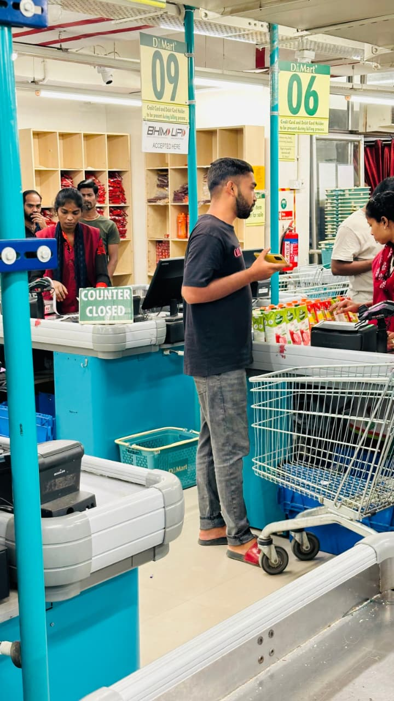
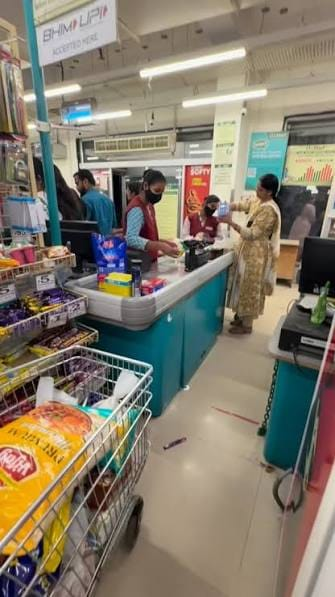
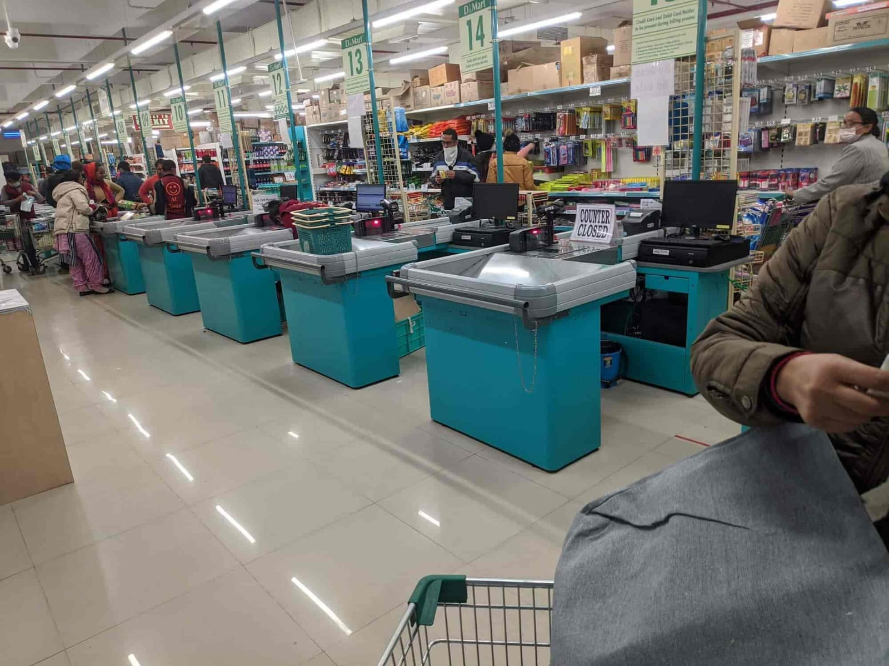
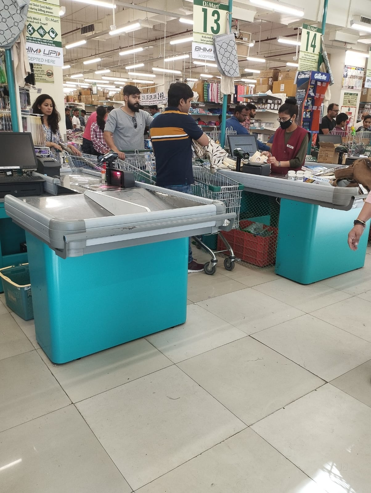
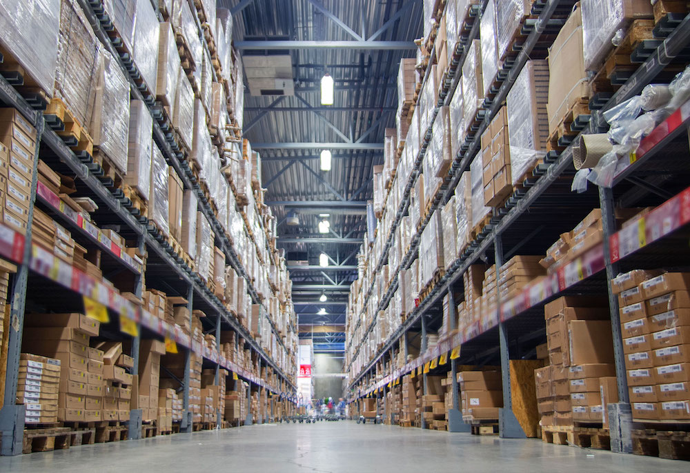
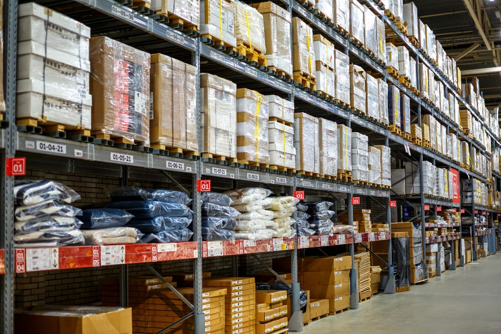

SAMGRAHA
An edge AI platform that watches store cameras locally and turns what they see into three things: a footfall count, a checkout queue forecast, and a shelf restock task — assigned to staff and confirmed by the same camera before it closes. Every image below is either real store footage or the platform's own rendered output, mapped to the module that reads it.
Counting the door, not the face
A calibrated virtual tripwire across the entrance turns every crossing into an IN or OUT event. No new hardware — this runs on a store's existing camera feed.

CAM-01 · ENTRANCE EXISTING HARDWAREstore_layout.json, not a new camera install.Crossing direction comes from the sign of a 2D cross product between the tripwire vector and the vector to the tracked point — a flip in sign between two consecutive frames is a crossing. A five-minute rolling window also compares the current inbound rate to the previous window: a surge past a configured threshold fires an alert on its own, independent of the queue below.
Tracks, not identities
Every detection becomes a bounding box and an integer track ID that lives only in memory. No face is ever detected, no embedding is ever computed, and the ID is deleted the moment the track is lost.

CAM-03Concept renders of the overlay a live tracking feed produces: a box and a track number, nothing else. The default backend is a dependency-free background-subtraction tracker (runs on a laptop, no GPU); --detector yolo swaps in real YOLOv8n + ByteTrack for production accuracy without touching any downstream code.
This heatmap is not a mockup
A decaying 2D Gaussian accumulator, fed synthetic track points and rendered through the platform's own render_png_bytes() — the exact function the live dashboard calls at /api/heatmap/<camera>/traffic.png.

TRAFFIC LAYER
OVERLAYTwo layers accumulate independently: traffic increments for every active track, dwell only when a track's frame-to-frame speed drops under a threshold — distinguishing a browsing shopper from someone just walking past. Both decay each update (0.995/tick) so the map reflects recent activity, not an ever-growing total.
A closed counter is a formula, not a guess
Queue state feeds a Congestion Index, CI = λ / (c·μ) — arrival rate over service capacity. Cross the critical threshold and the platform doesn't just alert: it opens a task.

CAM-04c drops, CI rises. CAM-04
CAM-04

CAM-04
CAM-04c = counters open now.
CAM-04Below critical, two more tiers apply: 0.70–1.00 is a soft warning, and CI sustained under 0.35 recommends closing a lane and reallocating staff — the same engine that opens a counter also says when to stand one down.
An empty shelf isn't automatically a restock job
Shelf void detection alone can't tell a stockout from a misplaced item or a slow mover. Fusion cross-references it against backroom stock and sales velocity before a task ever reaches a staff member.

BACKROOM
BACKROOMWhatever the cause, the resulting task is scored — raw = (V/V_ref)·M·(G/G_ref)·A/(1+D), clamped to a 0–100 priority — assigned to a rostered staff member by zone and current workload, and marking it "done" only starts a re-check: the camera has to confirm the shelf is actually full before the task closes.
How the five modules connect
FrameSource (webcam / file / RTSP) │ ▼ PersonTracker — motion tracker (default) or YOLOv8+ByteTrack (--detector yolo) │ ephemeral track_id + ground-contact point only — no Re-ID, no faces ├──► FootfallCounter tripwire crossing + surge detection (module 01) ├──► HeatmapAccumulator traffic / dwell floor grid (module 03) ├──► QueueMonitor CI = λ/(c·μ), lane recommendations (module 04) └──► ShelfVoidDetector per-slot void ratio, occlusion-gated (module 05) │ out-of-stock ▼ Fusion void × backroom stock × POS velocity → cause + priority ▼ TaskManager assigns via roster, re-verifies against the live camera │ ▼ SQLite (WAL) + dashboard (REST · WebSocket · Tasks panel)